[ ]:
import sys
IN_COLAB = 'google.colab' in sys.modules
#if IN_COLAB:
# Install NNSOM
!pip install --upgrade NNSOM
[4]:
from NNSOM.plots import SOMPlots
import matplotlib.pyplot as plt
[ ]:
# Random State
from numpy.random import default_rng
SEED = 1234567
rng = default_rng(SEED)
[ ]:
from sklearn.datasets import load_iris
import numpy as np
import pandas as pd
from sklearn.preprocessing import MinMaxScaler
# Data Preprocessing
iris = load_iris()
X = iris.data
y = iris.target
X = X[rng.permutation(len(X))]
y = y[rng.permutation(len(X))]
scaler = MinMaxScaler(feature_range=(-1, 1))
Loading Pre-trained SOM
[ ]:
from google.colab import drive
drive.mount('/content/drive')
Mounted at /content/drive
[ ]:
import os
model_path = "/content/drive/MyDrive/Colab Notebooks/NNSOM/Examples/Iris/"
trianed_file_name = "SOM_Model_iris_Epoch_500_Seed_1234567_Size_4.pkl"
# SOM Parameters
SOM_Row_Num = 4 # The number of row used for the SOM grid.
Dimensions = (SOM_Row_Num, SOM_Row_Num) # The dimensions of the SOM grid.
som = SOMPlots(Dimensions)
som = som.load_pickle(trianed_file_name, model_path)
[ ]:
clust, dist, mdist, clustSize = som.cluster_data(X)
Visualization#
Data Preparation#
[ ]:
data_dict = {
"data": X,
"target": y,
"clust": clust
}
Gray Hist#
Gray Hist with continuous data in X#
Brigher: Longer
Darker: Shorter
[ ]:
# Visualization
fig, ax, pathces, text = som.plot('gray_hist', data_dict, ind=0)
plt.suptitle("Gray Hist with Sepal Length", fontsize=16)
plt.show()
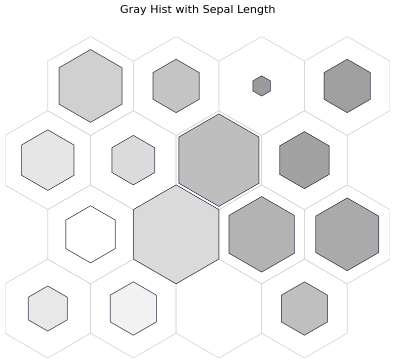
Gray Hist with Caterogrical Variable#
Brighter: More Sentosa
Darker: Less Sentosa
[ ]:
fig, ax, pathces, text = som.plot('gray_hist', data_dict, target_class=0)
plt.suptitle("Gray Hist with Sentosa Distribution")
plt.show()
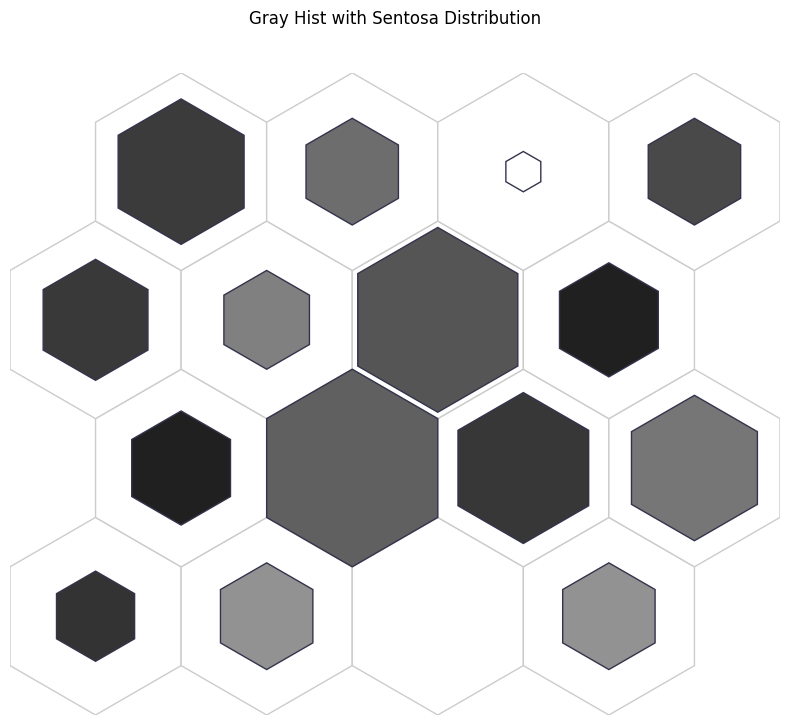
Color Hist#
Color Hist with continuous variable#
[ ]:
fig, ax, pathces, text, cbar = som.plot('color_hist', data_dict, ind=0)
plt.suptitle("Color Hist with Sepal Length", fontsize=16)
plt.show()
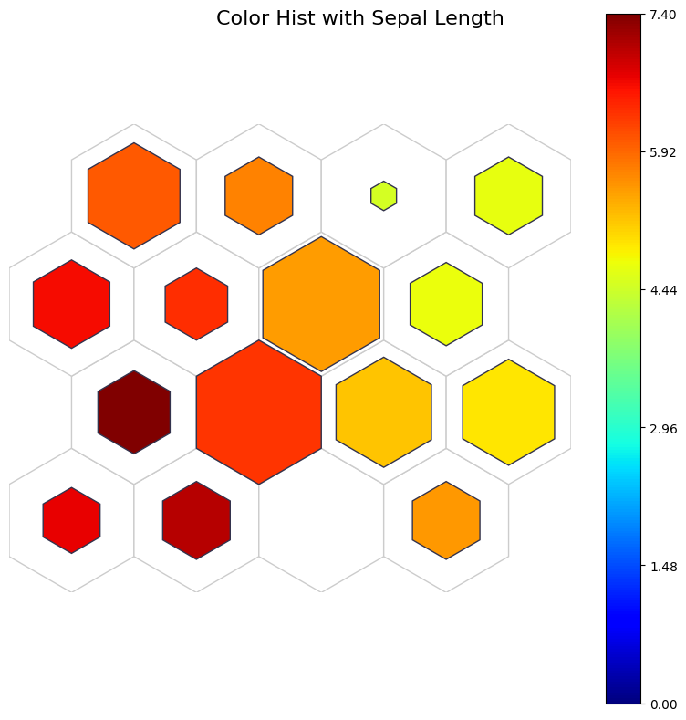
Color Hist with categorical variable#
[ ]:
fig, ax, patches, text, cbar = som.plot('color_hist', data_dict, target_class=0)
plt.suptitle("Color Hist with Sentosa Distribution", fontsize=16)
plt.show()
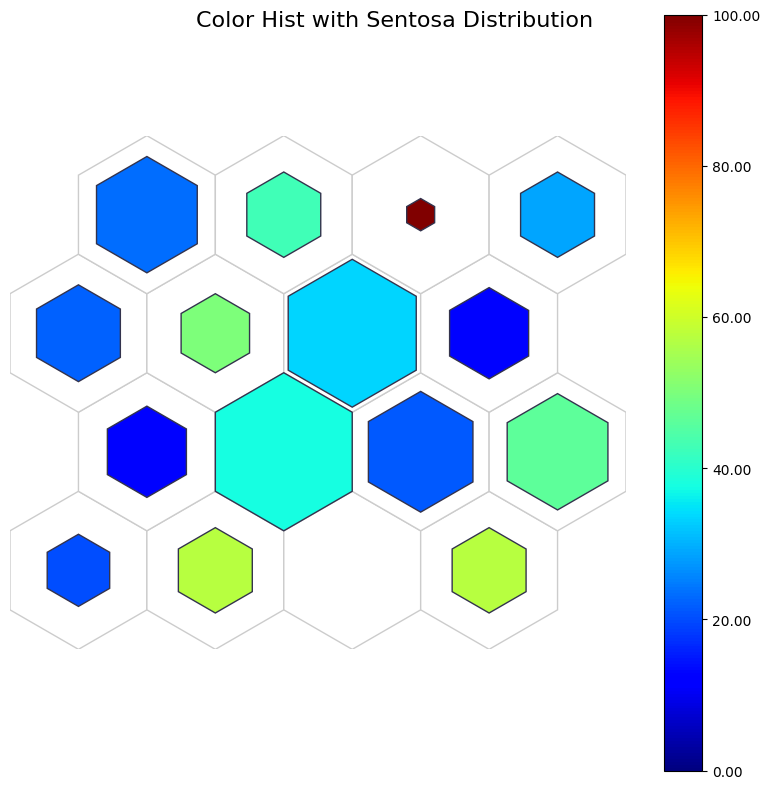
Basic Plots#
Pie Chart#
Blue: Sentosa
Yellow: Virginica
Pink: Vercicolor
[ ]:
fig, ax, h_axes = som.plot("pie", data_dict)
plt.suptitle("Iris Class Distribution", fontsize=16)
plt.show()
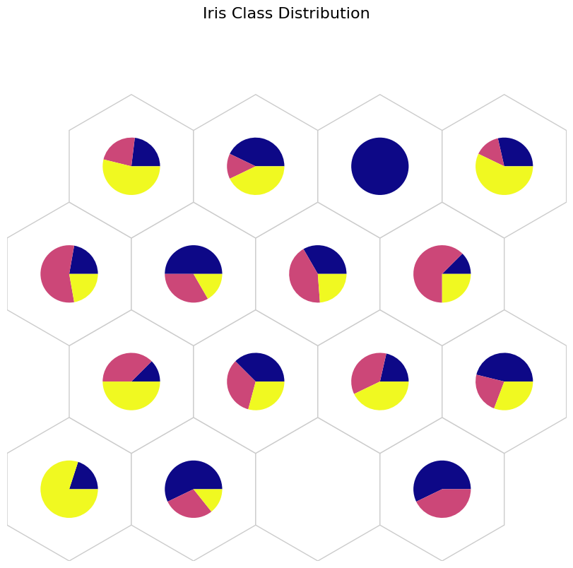
Stem Plot#
x: Categories (0: sentosa, 1: versicolor, 2: virginica)
y: count for each class
[ ]:
fig, ax, h_axes = som.plot('stem', data_dict)
plt.show()
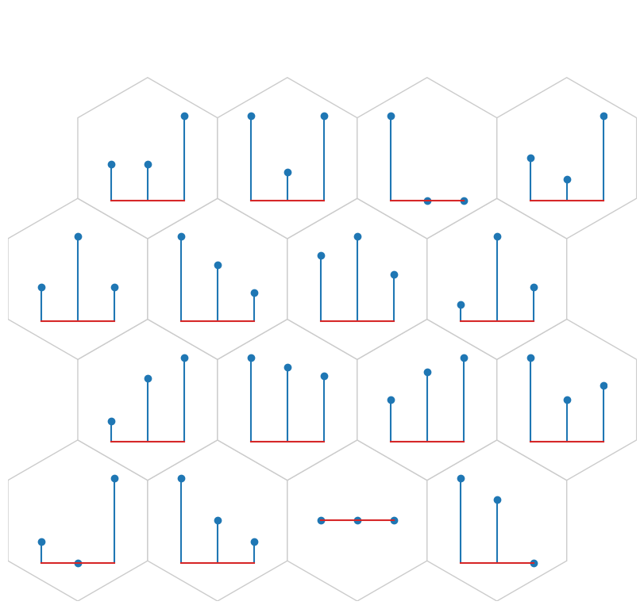
Histogram#
[ ]:
fig, ax, h_axes = som.plot('hist', data_dict, ind=0)
plt.suptitle("Sepal Length", fontsize=16)
plt.show()
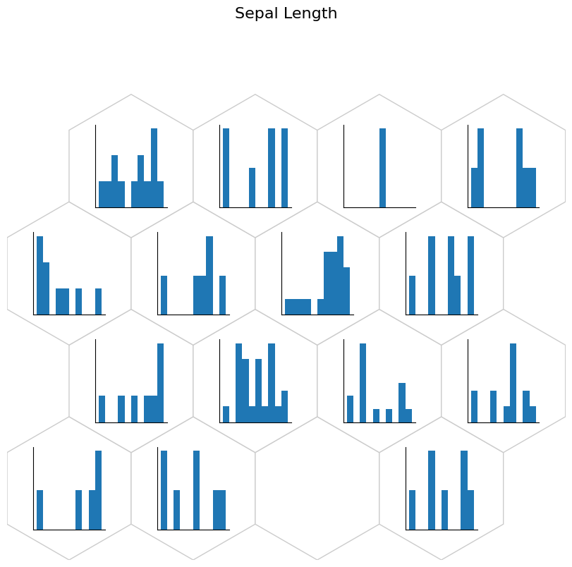
[ ]:
fig, ax, h_axes = som.plot('hist', data_dict, ind=1)
plt.suptitle("Sepal Width", fontsize=16)
plt.show()

Box Plot#
[ ]:
fig, ax, h_axes = som.plot("box", data_dict)
plt.suptitle("Iris Feature Distirbution", fontsize=16)
plt.show()
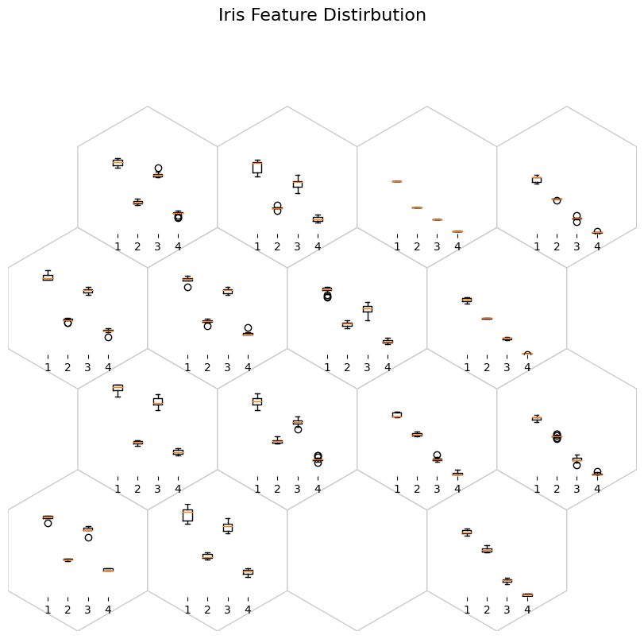
[ ]:
fig, ax, h_axes = som.plot("box", data_dict, ind=[0, 1])
plt.suptitle("Box Plot with Sepal length and width", fontsize=16)
plt.show()
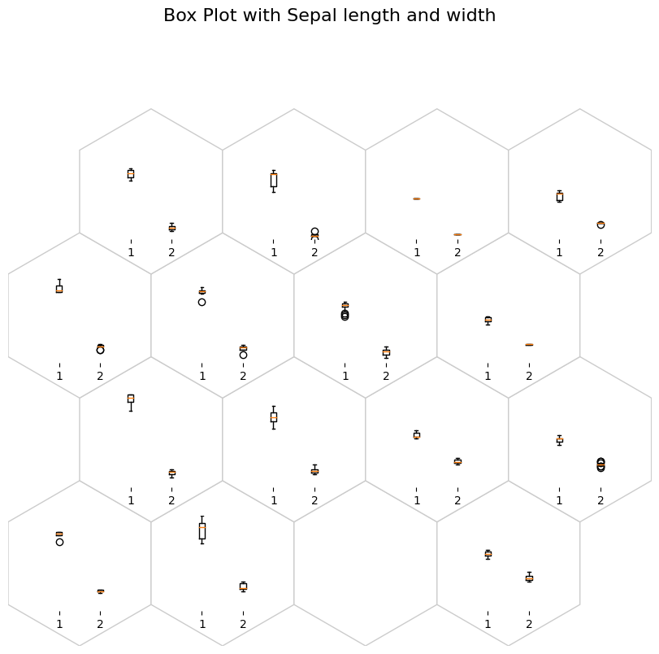
[ ]:
fig, ax, h_axes = som.plot("box", data_dict, ind=0)
plt.suptitle("Box Plot with Sepal Length", fontsize=16)
plt.show()
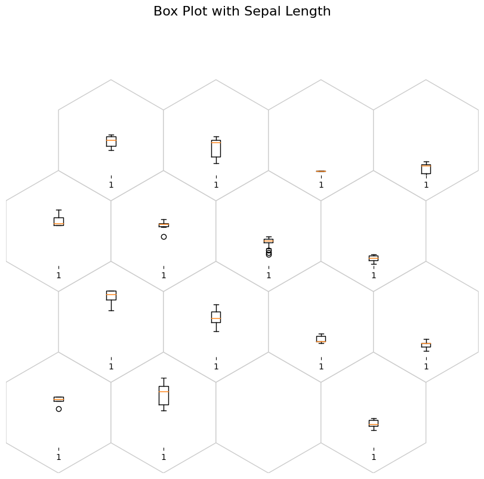
Violin Plot#
[ ]:
fig, ax, h_axes = som.plot("violin", data_dict)
plt.suptitle("Violin Plot with all feature in Iris", fontsize=16)
plt.show()

[ ]:
fig, ax, h_axes = som.plot("violin", data_dict, ind=[0, 1])
plt.suptitle("Violin Plot with Sepal Length and Width", fontsize=16)
plt.show()
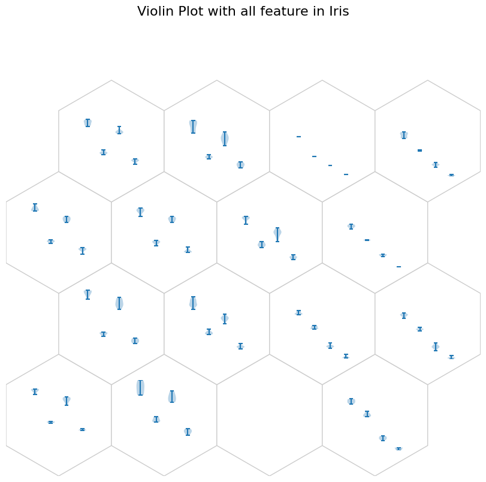
[ ]:
fig, ax, h_axes = som.plot("violin", data_dict, ind=0)
plt.suptitle("Violin Plot with Sepal Length", fontsize=16)
plt.show()
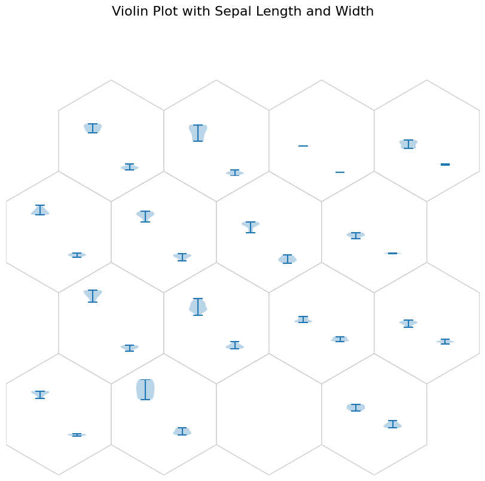
Scatter Plot#
[ ]:
fig, ax, h_axes = som.plot("scatter", data_dict, ind=[0,1])
plt.suptitle("Scatter Plot with Sepal Length and Width", fontsize=16)
plt.show()
/usr/local/lib/python3.10/dist-packages/NNSOM/plots.py:1197: RankWarning: Polyfit may be poorly conditioned
m, p = np.polyfit(x[neuron], y[neuron], 1)

[ ]:
fig, ax, h_axes = som.plot("scatter", data_dict, ind=[2, 3])
plt.suptitle("Scatter Plot with Petal Length and Width", fontsize=16)
plt.show()
/usr/local/lib/python3.10/dist-packages/NNSOM/plots.py:1197: RankWarning: Polyfit may be poorly conditioned
m, p = np.polyfit(x[neuron], y[neuron], 1)
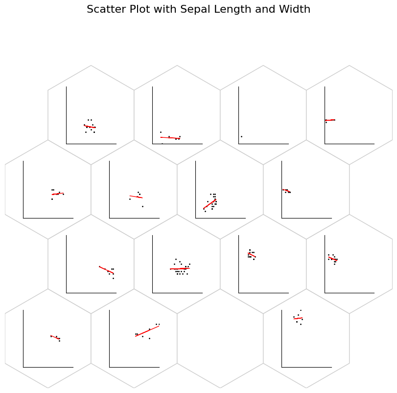
Component Planes
[ ]:
som.plot('component_planes', data_dict)
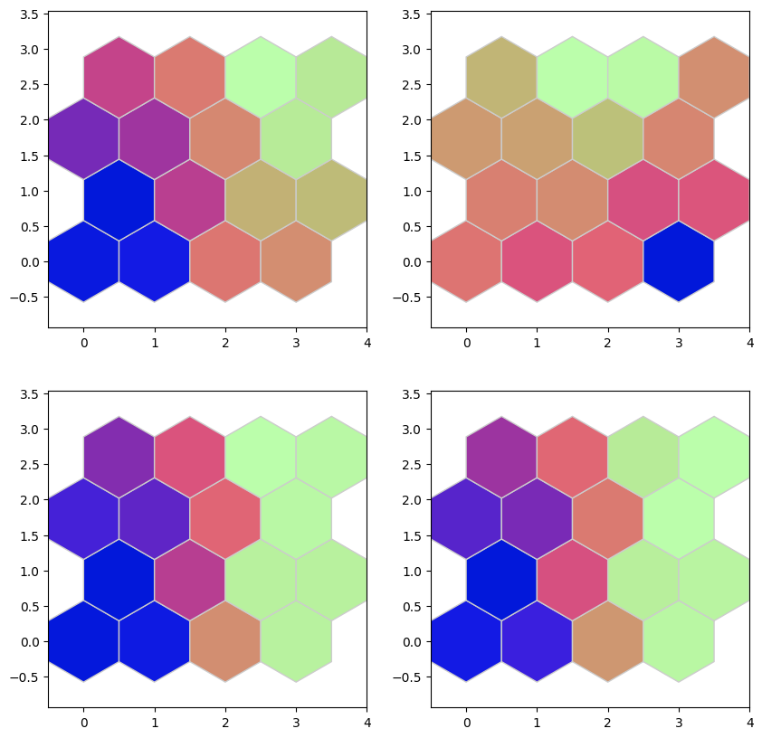